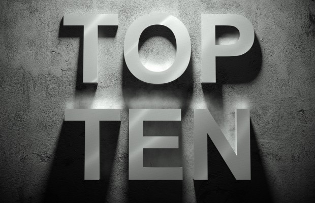

 This is DMB's first top ten song playlist. It features songs from various artists, including ones in the metro Detroit area. Detroiters are raving about this unbaised playlist, in which many are already calling the playlist of the century. We're looking forward to the next instalation of DMB weekly top 10. This is DMB's first top ten song playlist. It features songs from various artists, including ones in the metro Detroit area. Detroiters are raving about this unbaised playlist, in which many are already calling the playlist of the century. We're looking forward to the next instalation of DMB weekly top 10. This is DMB's first top ten song playlist. It features songs from various artists, including ones in the metro Detroit area. Detroiters are raving about this unbaised playlist, in which many are already calling the playlist of the century. We're looking forward to the next instalation of DMB weekly top 10. This is DMB's first top ten song playlist. It features songs from various artists, including ones in the metro Detroit area.
please dont commit copyright infringement on me